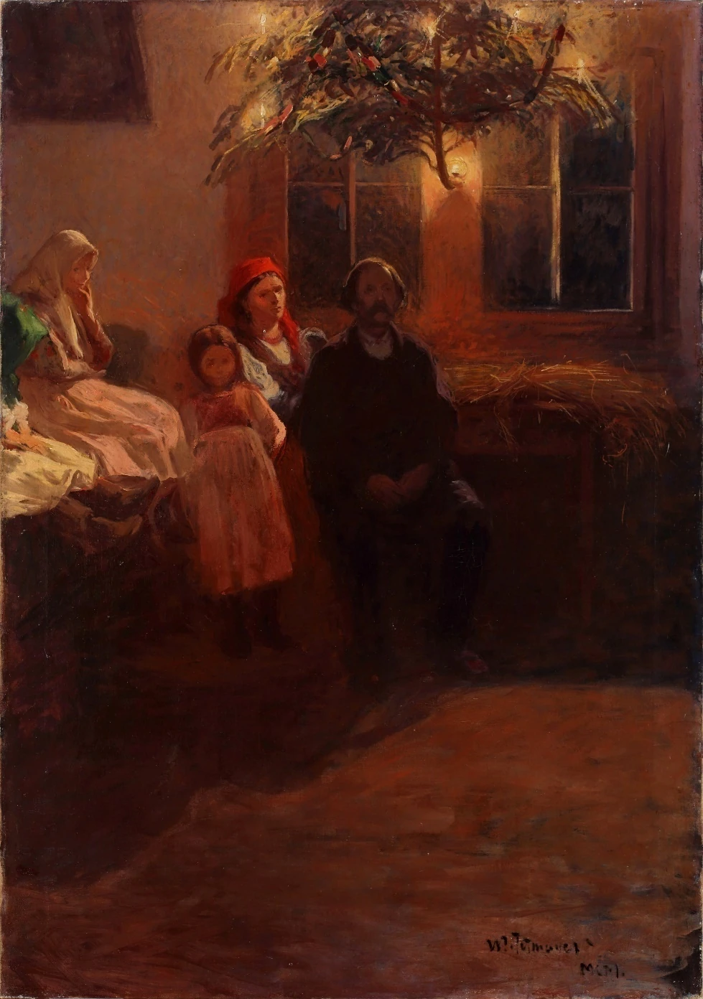
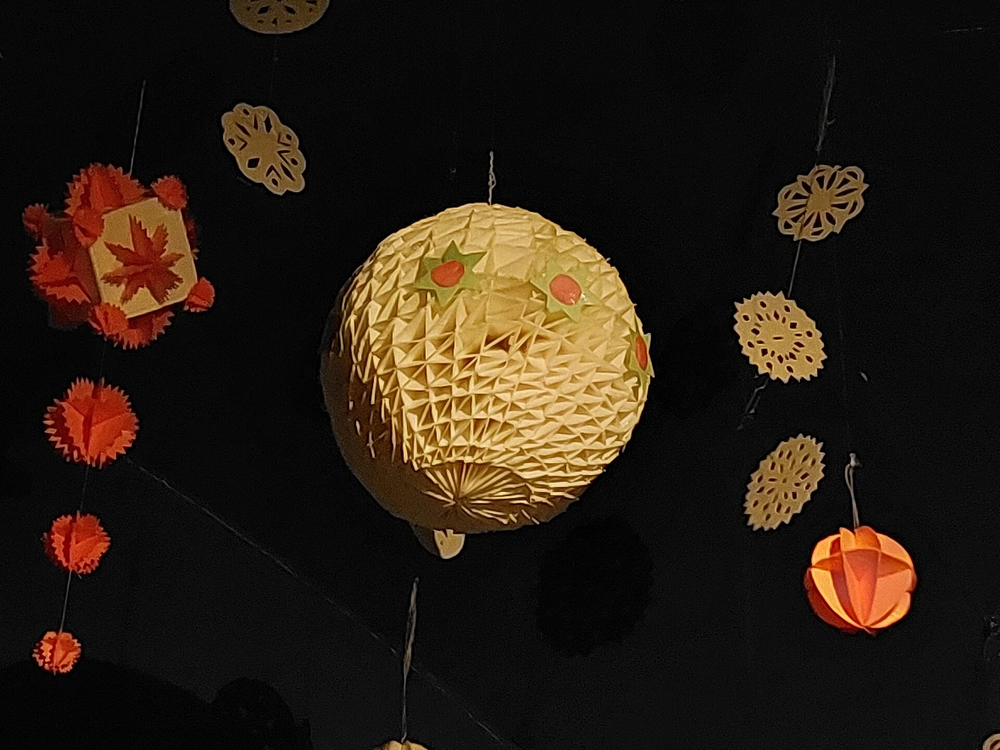
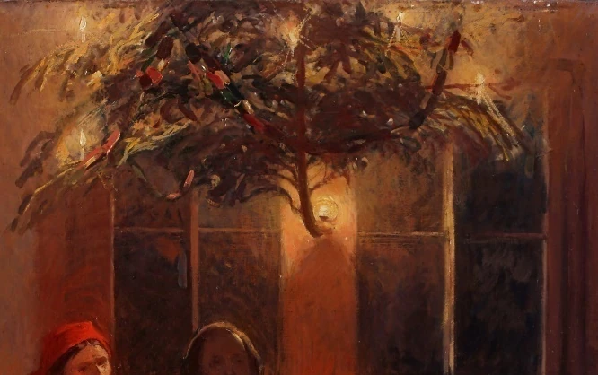

아직 펼치지 않은 카드
아직 펼치지 않은 카드
유리 공 장식 ‘봄브키’가 폴란드 시골집까지 오기 전, 산골집 천장에는 거꾸로 매단 전나무 꼭대기가 있었어요. 성탄 전날(크리스마스이브) 저녁, 얇은 웨하스 세 장으로 둥근 ‘세상’을 지어 거기에 매달아 보세요.
옛날 폴란드 산골집에서는 나무를 거꾸로 천장에 매달았대. 웨하스 세 장으로 동그란 장식을 만들어 달아 볼까?
검수 전 시안이에요(기준서 1판). 포드와지니치카와 시비아티는 폴란드 민족지 단체의 안내와 1924년 크라쿠프 지방 기록, 여러 지역 박물관의 설명을 따랐어요. 상상은 ‘눈 감고 상상해 보기’에만 썼어요.
유리 공이 시골집 성탄 나무(크리스마스트리)에 걸리기 전, 폴란드 남쪽 산골 지방인 포드할레와 베스키디의 집에서는 ‘포드와지니치카’를 걸었어요. 가문비나무나 전나무 꼭대기를 잘라 천장 들보(천장을 가로지르는 굵은 나무)에 거꾸로 매단 것이에요.
흔히 성탄 전날 저녁상 바로 위나 방 한쪽 구석에 매달았어요. 종이 사슬과 짚으로 엮은 별, 사과와 호두, 과자를 달았어요. 집안에 복과 넉넉함을 가져온다고 여겼대요.


왼쪽은 1900년 폴란드 화가 브워지미에시 테트마예르가 그린 「포드와지니치카」예요. 불빛이 달린 포드와지니치카 아래 식구들이 모여 있고, 오른쪽에 짚더미가 보여요.
오른쪽은 크라쿠프 민족지 박물관(옛 시골 살림과 풍습을 모은 박물관)에 남은 포드와즈니크 그림으로, 1932년보다 앞서 그렸어요. ‘포드와즈니크’는 포드와지니치카의 다른 이름이에요. 맨 아래에 둥근 장식이 매달려 있어요.
산데츠 지방(노비송치 둘레)에 사는 ‘라흐’ 사람들의 집에서는 서 있는 성탄 나무가 들어온 뒤에도, 1930년대까지 포드와지니치카가 흔했어요.
옛날 폴란드 산골집에서는 나무 꼭대기를 거꾸로 천장에 매달았대! 사과랑 호두도 달았대.
물어보기거꾸로 매단 나무 아래에서 식구들은 무엇을 했을까?
성탄 전날 저녁상에서 나누어 먹는 얇은 웨하스를 ‘오플라테크’라고 해요. 밀가루 반죽을 틀에 얇게 구운 것이에요(‘폴란드의 오플라테크’ 카드 참고). 이 오플라테크로 둥근 장식 ‘시비아티’(하나일 때는 ‘시비아트’)를 지어 포드와지니치카에 달았어요.
‘시비아트’는 폴란드 말로 ‘세상’이라는 뜻이에요. 1924년 크라쿠프 지방의 풍습을 적은 책에는 이렇게 나와요.
“그때[저녁 식사 뒤]에는 오플라테크로 세상을 붙여 만들고, 그 아래 매다는 요람도 만들어요…”
세베린 우지엘라, 『크라쿠프 사람들』(1924) 37쪽 · 폴란드어를 이 안내서가 옮김
네모난 오플라테크라면 먼저 동그라미 세 장을 오려요. 세 장 가운데 하나는 그대로, 하나는 반으로, 하나는 넷으로 잘라요. 오플라테크는 잘 부서져서 입김을 불어 살짝 눅눅하게 한 뒤 잘라요.
아래 놓아 보기 그림은 폴란드 민족지 단체의 만들기 안내 차례를 따라 이 안내서가 그렸어요.
우리라면 어떤 오플라테크로 시비아트를 지을까요?
웨하스 세 장으로 동그란 세상을 만들어 보자! 하나는 그대로, 하나는 반으로, 하나는 넷으로!
물어보기웨하스를 반으로, 또 넷으로 자르면 모두 몇 조각이 될까?
눈 감고 상상해 보기
창밖은 캄캄하고, 방 안은 따뜻해요. 들보에 매단 전나무에서 송진 냄새가 나요. 식탁보 아래로 짚이 바스락거려요. 얇은 웨하스 가장자리에 입김을 불면, 하얀 동그라미가 살며시 휘어요.
눈을 감아 봐. 방 안에 나무 냄새가 나. 후~ 입김을 불어 웨하스를 붙이자. 하얀 세상이 동그랗게 생겼어!
우리 집에 오래 간직해 온 성탄 장식이나 물건이 있나요? 그 안에 어떤 기억이 담겨 있나요?
성탄 나무에 직접 그린 장식을 단다면 무엇을 그릴래?
마음에 닿는 한 줄을 고르거나 직접 써 보세요. 한 줄을 남기면 이 자리의 도장이 찍혀요. 이 기기에만 저장돼요.
이야기를 보다 궁금해질 만한 것들이에요. 답을 읽거나 짧은 영화로 보세요.


아직 펼치지 않은 이야기예요. 누르면 이야기가 펼쳐지고 색이 돌아와요. 더 알고 싶으면 근거를 따라가 보세요.
다 펼치면, 다음에 오실 때 새 이야기가 찾아와요.
오늘의 뒷이야기는 여기까지예요. 다음에 오시면 새 이야기가 기다리고 있어요.
펼친 뒷이야기 · 누르면 다시 볼 수 있어요
언제 지었나 폴란드 민족지 단체는 시비아티를 성탄 전날 지었다고 해요. 1924년 크라쿠프 지방 기록과 한 지역 박물관은 저녁 식사 뒤, 남은 오플라테크로 지었다고 적었어요. 장식을 대림절부터 미리 만들기 시작했다는 글도 있어요.
몇 장으로 지었나 이 카드의 차례는 동그라미 세 장이에요. 실레지아 박물관의 연구자는 가장 쉬운 시비아티를 동그라미 두 장을 반으로 잘라 짚 대롱에 붙여 공처럼 지었다고 해요.
어디에 걸었나 한 단체는 저녁상 위나 방 구석을, 실레지아 박물관은 두 창문 사이 성화를 건 ‘거룩한 구석’의 들보를 들어요. 키엘체 지방에서는 나무 꼭대기 대신 철사 고리에 푸른 가지를 엮어 걸기도 했대요.

확인한 날 · 2026년 11월 18일 · 바뀌기 쉬운 정보라 정기적으로 다시 확인해요
크라쿠프 민족지 박물관은 시비아티를 전시하고, 성탄 무렵 오플라테크로 시비아티를 짓는 모임을 열어 왔어요(2025년 12월에도 열었어요). 포데그로제 문화관은 해마다 성탄 전에 포드와지니치카 겨루기를 열어 왔어요(2014년에 37번째).
유리 공의 이야기는 앞면에 이어져요. 밀리치의 옛 성탄 장식 공장 자리에는 ‘봄브키 박물관’이, 노바 덴바에는 2012년에 문을 연 성탄 유리 공 박물관이 있어요. 여는 때는 미리 확인해 주세요.
만들기 안내의 차례(온 동그라미, 반쪽 둘, 사분의 일 넷, 실 꿰기, 매달기)대로 놓으면 카드에 금박이 입혀져요.
둘 가운데 하나만 해도 카드가 채색돼요.
‘처음 만나는 기독교 문화’의 깊은 카드예요. 실제 인물의 사진은 쓰지 않았어요. 카드 단계와 남긴 글은 이 기기에만 저장돼요.
영화처럼 보기 · 약 2분
화면을 누르거나 → 키를 누르면 넘어가요. 그냥 두어도 자막이 저절로 넘어가요.